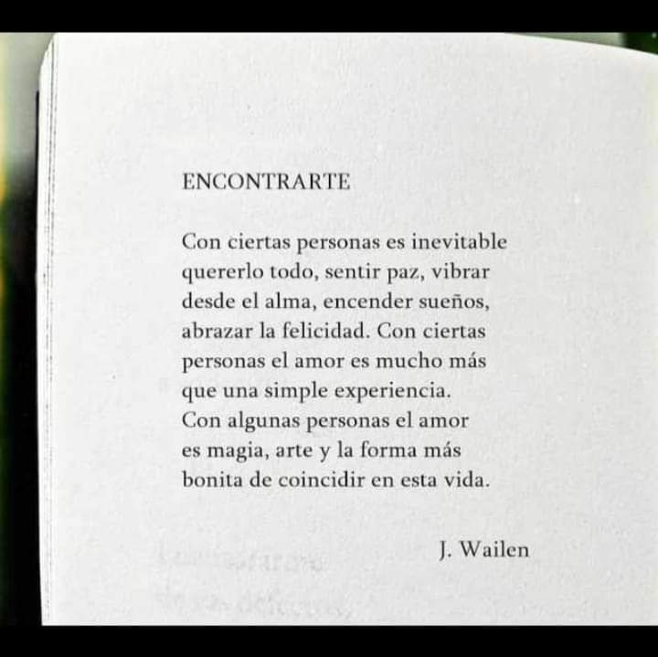

Caroline
Decía Umberto Eco que era absurdo criticar a las personas que compran libros y los acumulan sin leérselos. Que era como criticar a quien compra herramientas y no las usa todas.
Esta persona compra estas herramientas para poder utilizar la adecuada cuando lo necesite. Pues igual con los libros: acudes a ése en concreto cuando lo necesitas.
Una biblioteca particular no es una lista de tareas. No hay por qué obsesionarse tomándola como una cola de libros que leer.
Quizás es mejor pensarla como una bodega donde guardas tus mejores vinos, para elegir el que más te convenga en cada momento.
Te entrego esta biblioteca, salida de mi laberinto para entrelazarse con la tuya, y que de este vino bebamos los dos juntos.
T'estimo
-
Este libro es sólo un obsequio, el regalo eres tú.
Todo pasa a su tiempo y nos encontramos justo ahora.
Que lo hermoso que ha traído 2023 ha sido conocernos.
Y deseo seguir haciendolo.
Aquest llibre només és un obsequi, el regal ets tu.
Tot passa al seu temps i ens trobem justament ara.
Que el bell que ha portat 2023 ha estat conèixer-nos.
I vull seguir fent-ho
-
Solo quería decirte que hoy hace 6 meses me dí cuenta que el amor es elegir y hacer, además de encontrar y sentir. Y que, aunque sienta que la mayor parte del tiempo no consigo llegar a tu altura, Caro, tú me has dado un mapa de ruta para saber si estoy donde quiero estar.
Quiero que sepas que me gustaría que ese mapa me llevase a buen puerto junto a tu lado, si tú también lo quisieras Espero que estés bien
-
De tantos libros, este es especial. Porque todos los libros envejecen. Pero las dedicatorias no se olvidan, ni lo leído aunque no se recuerde. Si no que son vectores en un camino que ahora podemos recorrer juntos.
Sueño con eso.
que marcan nuestro camino que ahora converge.
Susana
Quisiera que un día nos miremos envejecidos y veamos nuestros libros envejecer con nosotros.
Este libro es solo un obsequio el regalo eres tú.
Porque los libros tienen el poder de cambiar la vida, deseo que tu vida se llene de luz y alegría, porque deseo que seas feliz, porque te amo.
Para ti, tú que para mi eres perfecta.
Es inmensa y tiene magia.
Los libros envejecen. Pero las dedicatorias no se olvidan, ni lo leído.
Los libros envejecen. Las dedicatorias se olvidan. Pero el camino... > El deseo de leer > El acto de leer > El acto de leer juntos un mismo libro
El deseo de leer y de follar es infinito.
Para mí eres como cualquiera y no te necesito, tampoco tú me necesitas porque no soy sino solo uno igual entre cien mil.
➤Todo pasa a su tiempo
cuando tiene que pasar
y te encuentro justo ahora
cuando pensaba que no te iba a encontrar
No puedo poner en palabras lo que te amo y lo feliz que me siento de tenerte y sentirte día a día.
Esto es algo de niños y yo, como niño que fui cuando lo leí, espero que lo disfrutes como niña.
Solo quiero que envejezcamos y veamos nuestros libros envejecer con nosotros.
De tantos libros este es especial
Que lo hermoso que trajo 2021 fue conocerte
Marcapáginas o rosa o flor que ella te haya enseñado
El amor ha sido la bonita forma en que han coincidido nuestras vidas:

Para quien camina conmigo.
Para quien sonriendo calmó mi tristeza.
Para quien me enseñó tantas cosas simplemente hablando.
Para quien me dio lo mas bonito que se puede dedicar a otra persona: su tiempo.
Para quien deseo que me permita seguir viendo crecer y que este libro le recuerde un poco mi presencia.
En mil poemas no entra el amor que te tengo.
Aquí tienes, 20 para empezar.
La vida es eterna
en cinco minutos contigo.
De tantos libros que podrían ser el primero en regalarte, este es especial porque creo que de alguna manera con él te completo algo.
La vida es eterna en cinco minutos contigo, y aunque en una noche no entra lo que siento por ti, aquí tienes mil y una, para empezar.
Para quien premia con su mirada.
Para quien sonriendo calmó mi tristeza.
Para quien me enseñó tantas cosas simplemente hablando.
Para quien me dio lo mejor que se puede dedicar a otra persona: su tiempo.
Para quien deseo que camine conmigo y que este libro le recuerde un poco mi presencia cuando no.
Te quiero
(Quisiera que un día nos miremos envejecidos y veamos estos libros nuestros envejecer con nosotros.)
Para quien camina conmigo.
Para quien sonriendo calmó mi tristeza.
Para quien me enseñó tantas cosas simplemente hablando.
Para quien me dio lo mejor que se puede dedicar a otra persona: su tiempo.
Para quien deseo que me permita seguir viendo crecer y que este libro le recuerde un poco mi presencia.
Te quiero
+Fecha
Te completo
En mil noches no entra el amor que te tengo.
Aquí tienes mil y una, para empezar.
La vida es eterna
en cinco minutos contigo